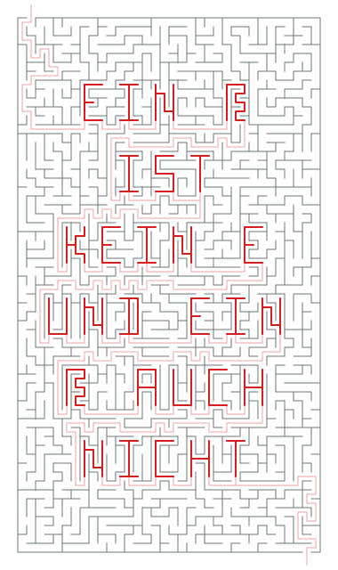
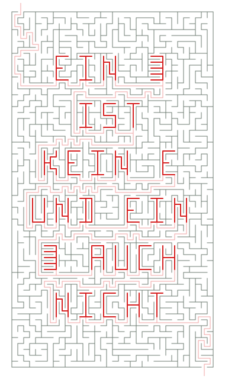
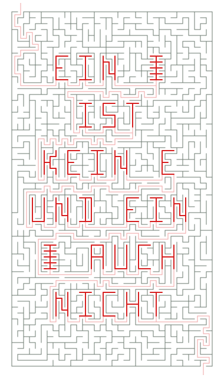
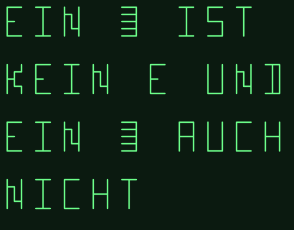
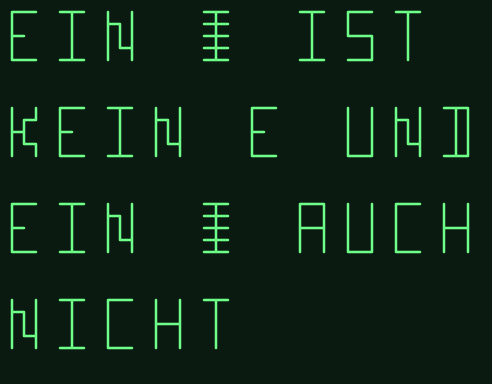
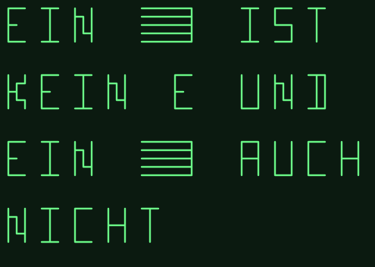
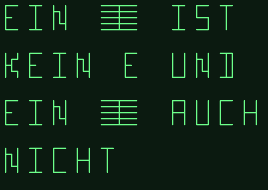
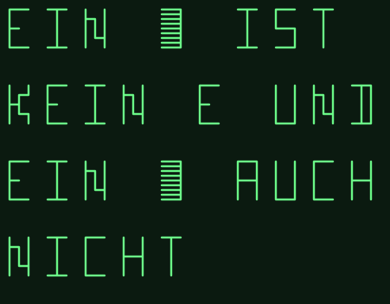
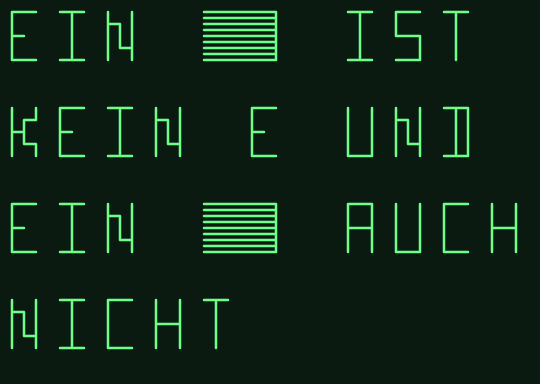

Ersatzglyphe: Varianten
Satz: „Ein € ist kein E, und ein @ auch nicht“. € und @ kennt die Schrift nicht, sie werden zur Ersatzglyphe.
Echte Labyrinth-Seiten (Generator aus src/, Feld 3 × 5)

Heute: Schlangenlinie: Der heutige Weg durch alle 15 Zellen. Wirkt wie ein E.

Kamm, Rücken rechts (deine Skizze): Rücken rechts, fünf Zinken nach links, jede hin und zurück.

Kamm, Rücken in der Mitte: Rücken in der Mitte, jede Zeile nach links und rechts erkundet.
Skizzen: nur die Leuchtspur, ohne Labyrinth
Doppelt breit und feinere Zellen kann der Generator heute nicht; die Skizzen zeigen nur die Form.
Heute: Schlangenlinie: Der heutige Weg durch alle 15 Zellen. Wirkt wie ein E.

Kamm, Rücken rechts (deine Skizze): Rücken rechts, fünf Zinken nach links, jede hin und zurück.

Kamm, Rücken in der Mitte: Rücken in der Mitte, jede Zeile nach links und rechts erkundet.

Kamm rechts, doppelt breit (7 × 5): Feld über zwei Zeichen samt Lücke, also 7 Zellen breit.

Kamm Mitte, doppelt breit (7 × 5): Wie oben, Rücken in der Mitte.

Kamm rechts, feinere Zellen: Halber Zellabstand im normalen Feld: neun Zinken statt fünf.

Kamm rechts, feinere Zellen und doppelt breit: Halber Zellabstand, Feld 7 Zellen breit.